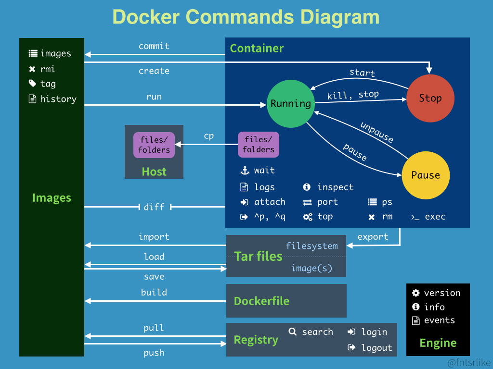
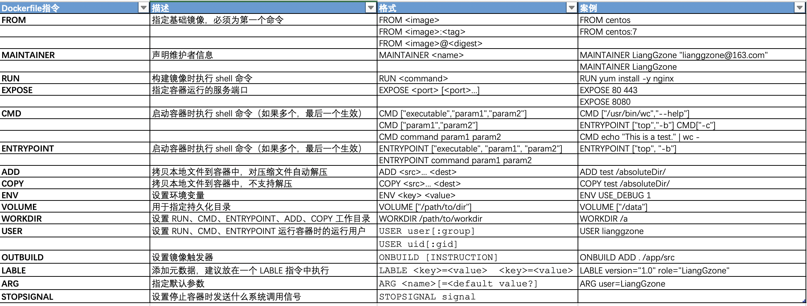
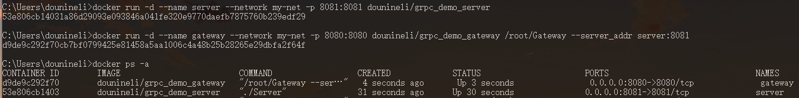
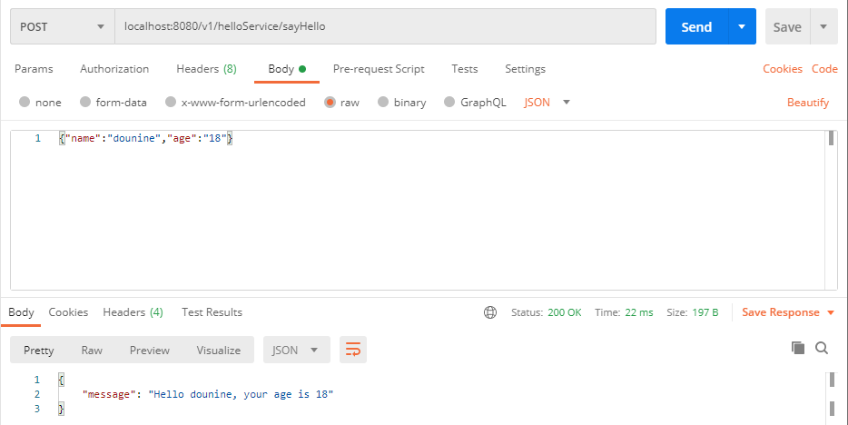

0. 前言
趁着实习摸鱼（啊不是）之际，简单学习一下曾经很想入门的 docker 。
在上一篇有关 DevOps 的博客中，曾提到：docker 容器的出现，推动了 DevOps 的发展。而 docker 的功劳不仅如此，它的出现可以说是：具有划时代的意义。
很早之前，我就想学习 docker 。但，那时 docker 还未完全支持 Windows 平台，奈何电脑又太差，不敢给 Linux 虚拟机分配太高配置，导致 docker 学习一直被搁置。
如今，docker 已经推出了完美的 Windows 桌面版，而公司电脑配置也完全足够。天时地利人和，此时不学，更待何时。
同时，作为实践，我将用 docker 构建和运行 grpc-gateway 项目。
环境如下：
- Docker 版本：v19.03
- Go 版本：v1.14
1. 简单介绍 Docker
1.1. Docker 三大组成部分
镜像（image）：用虚拟机安装过操作系统的同学，应该都知道镜像是什么了，它相当于一个只读的光盘，记录着一个简单的Linux，或者一个配置好MySQL环境的操作系统等。拷贝忍者卡卡西用写轮眼看到的忍术，就是一个镜像。
容器（container）：可以看作一个操作系统，它基于镜像启动。卡卡西施展拷贝的忍术，就相当于根据镜像启动一个容器，并且你可以做进一步的改进。
仓库（repository）：用于存放镜像的地方，类似于GitHub，你可以push自己制作的镜像，也可以pull别人的镜像。
1.2. docker 命令

常用的命令示例：
- 镜像操作：
docker image ls：显示所有镜像docker rmi <image_id>：删除镜像
- 容器操作：
docker container run -d --name my-nginx -p 8080:80 nginx:latest：根据 nginx 镜像，启动一个容器（内部包含 docker create、docker start 两步），并后台运行，容器端口80对应本地端口 8080。-d：后台运行容器--name my-nginx：为容器命名，方便后续操作-p 8080:80：指定本地端口与容器端口对应关系nginx:latest：latest 版本的 nginx 镜像
docker run --rm -it centos:latest bash：根据 centos 镜像，启动一个容器，并执行 bash 程序，同时使用户与容器进行交互，退出容器后删除容器。--rm：退出容器后删除容器-i：开放容器的标准输入-t：为容器分配一个虚拟终端，以便于我们操作bash：进入容器时，执行的程序
docker ps -a：列出所有容器。-a：包括已停止的容器。
docker exec -it my-nginx bash：进入 my-nginx 容器，并执行 bash 命令。
- Dockerfile 操作：
docker build --target <stage_name> -t <image_name> .：根据当前目录下的 Dockerfile 构建一个镜像。--target <stage_name>：指定阶段，用于多阶段构建-t <image_name>：构建的镜像名称.：指示当前目录
docker 中很多命令是有相同效果的，比如：docker images == docker image ls、docker rmi == docker image rm、docker ps -a == docker container ls -a等，可自行尝试。
1.3. Dockerfile
Dockerfile 用于构建镜像。镜像既可以通过容器 commit 构建，也可以通过 Dockerfile 构建，但更推荐后者（前者黑盒）。
Dockerfile 常用命令如下：

Dockerfile 编写指南：一般性的指南和建议
2. 用 docker 构建和运行 grpc-gateway 项目
项目地址：https://gitee.com/dounineli/grpcDemo.git
2.1. 编写 Dockerfile
Dockerfile 如下：
1 | FROM golang:1.14 as builder |
利用 Dockerfile 的多阶段构建，减少镜像体积（编译型语言，运行环境不需要复杂的编译环境）。
总共分为三个阶段：
builder编译阶段，主要用于编译、构建项目，生成 grpc 服务端Server和 grpc-gateway 网关Gateway两个可执行文件；server运行阶段，主要用于运行builder阶段生成的Server可执行文件；gateway运行阶段，主要用于运行builder阶段生成的Gateway可执行文件。
2.2. 根据 Dockerfile 生成镜像
生成镜像时，我们只需构建 server 和 gateway 两个运行阶段即可，两个阶段依赖的 builder 阶段镜像会自动构建，并在构建完成后自动删除。分别得到 grpc 服务端和 grpc-gateway 网关镜像：
1 | docker build --target server -t <server_image_name> . |
2.3. 容器运行
由于 grpc-gateway 网关需要访问 grpc 服务端，因此：
- 本地运行时，可以创建容器网络，并将两个容器接入网络，则相互之间可通过容器名访问：
1 | docker network create my-net |
- 分布式运行时，则需要提供
server的 IP 地址：
1 | docker run -d --name server -p 8081:8081 <server_image_name> |
2.4. 运行结果

用 postman 进行接口测试：

3. 总结
不得不说，docker 的出现，让很多事情变得轻而易举。举一个很简单的例子：如果你想在电脑上安装 MySQL ，直接运行 docker 的 MySQL 镜像即可，几行命令搞定，再也不用麻烦地配置环境了。